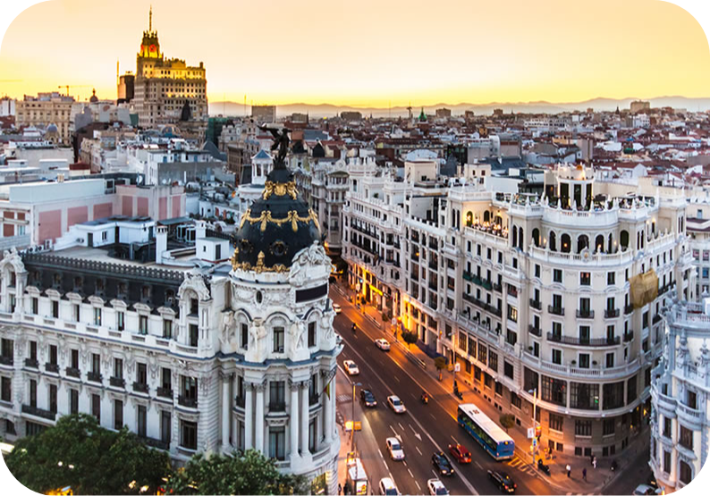

MADRID
 Madrid é a capital e a maior cidade da Espanha. Em 2021 o município tinha 3 305 408 habitantes e a sua área metropolitana tinha cerca de 6,8 milhões de habitantes. É a segunda maior cidade da União Europeia (UE), depois de Berlim, e sua área metropolitana é a segunda maior da UE, depois de Paris. A área urbana da capital espanhola abrange um total de 604,3 de km2.